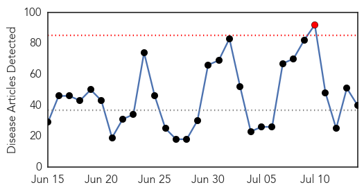
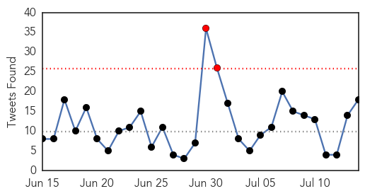
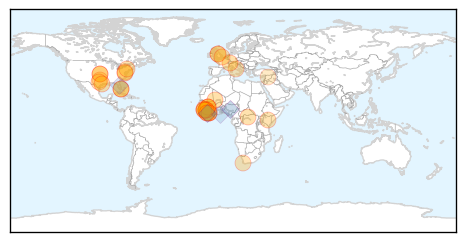
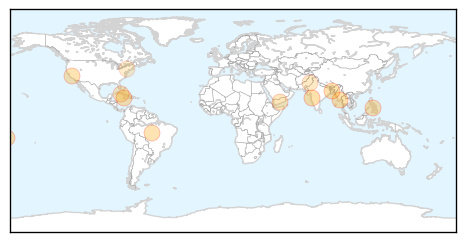

Ebola
30-Day Web Trend
1 alerts, 0 warnings

30-Day Twitter Trend
1 alerts, 0 warnings

Article Locations
Article Confidences

Top Articles:
- 1.000
- Inhalable Ebola vaccine discovered
- 1.000
- Inhalable vaccine protects monkeys against Ebola
- 1.000
- Ebola Vaccine Developed? Possible Cure Treats Virus In Monkeys
- 1.000
- Why Nigeria must be vigilant for Ebola
- 0.999
- Ebola Outbreak No Longer Raging, But Still Churning in West Africa
- 0.999
- Scientists Discover Inhalable Ebola Vaccine
- 0.998
- Africa's Ebola outbreak has not run its course
- 0.998
- EU response to Ebola outbreak in West Africa
- 0.998
- Tests show Ebola in Liberia linked to virus found months ago
- 0.996
- Inhalable Vaccine Could Stop Further Ebola Outbreaks From Happening
- 0.995
- Needle-free Ebola vaccine shows promise in animal tests
- 0.994
- Inhalable Ebola Vaccine Works in Monkeys
- 0.991
- Liberia Confirms New Ebola Case as Outbreak Spreads
- 0.988
- Monkey tests show promise for needle-free Ebola vaccine
- 0.986
- Dont worry , be horny!
- 0.984
- Ebola vaccine trial begins in Senegal
- 0.981
- Researchers Develop Aerosolized Vaccine That Protects Against Ebola in Primate Model
- 0.972
- inhalable ebola vaccineMedCity News
- 0.970
- Why the States are Right to Quarantine Ebola Workers
- 0.966
- Dr. Kent Brantly: Liberia Has a Very Special Place in Our Hearts
- 0.944
- Sierra Leone in exposure alarm mode after two Ebola patients flee clinic
- 0.938
- Learning From Ebola
- 0.937
- Inhalable Ebola vaccine effective in primates
- 0.909
- Kenya Airways : New Sierra Leone Ebola cases delay KQ return to lucrative West Africa route
- 0.904
- Sierra Leone Observes WAHO Day Health Services Workers Union calls for Health Workers Safety
- 0.902
- Inhalable Ebola vaccine effective in primates
- 0.900
- After Ebola and War: Electricity for Sierra Leone
- 0.892
- EU Pledges €450M to Ebola Affected Countries
- 0.877
- Visit to number 10 for nurse honoured for Ebola work in Africa
- 0.876
- WHO calls for African emergency centre
- 0.853
- EU pledges 450 Million Euros to Ebola- affected countries
- 0.835
- Holy See Permanent Observer addresses Ebola conference Vatican Radio
- 0.752
- A plan to protect the world—and save WHO
- 0.696
- Allan receives ebola medal from the Prime Minister
- 0.668
- World: Pledges for Humanitarian Aid Fall Far Short of Deliveries
- 0.666
- America Needs Improved Leadership and Funding for Biodefense
- 0.657
- New UN goals lack focus, global health experts warn
- 0.627
- Ebola and information: Why donors must publish what they fund
- 0.602
- WHO Ebola Report is a Missed Opportunity
- 0.511
- news, information, Iowa, Toledo Chronicle, Tama News-Herald
Top Tweets:
- 0.998
- Ebola Virus Cure & Treatment Update: Inhalable Vaccine Working on Primates - Latinos Health http://t.co/KniiAKEAyf ebola EVD
- 0.970
- Inhalable Vaccine Developed for Ebola - USA TODAY http://t.co/bSLnnpB43g ebola EVD
- 0.965
- Liberia confirms new Ebola case as outbreak spreads - Reuters http://t.co/7ZUkDSCUkx ebola EVD
- 0.963
- Liberia confirms new Ebola case as outbreak spreads - Yahoo News http://t.co/OISR4bBdyn ebola EVD
- 0.963
- Liberia confirms new Ebola case as outbreak spreads - Reuters UK http://t.co/VO7ry7r9ho ebola EVD
- 0.954
- Ebola crisis: Caring for Liberia's orphans of the outbreak - BBC News http://t.co/xrrAV6uiu3 ebola EVD
- 0.953
- WHO tackle health and security 'beyond Ebola' - The Citizen http://t.co/wnG8kyDwd5 ebola EVD
- 0.949
- Ebola Kills Woman in Liberia - TIME http://t.co/iJ9Jfg9vIZ ebola EVD
- 0.927
- RT: Ebola virus disease by month. http://t.co/zYWRhinfGm
- 0.916
- Ebola: 'Fear, denial and fatigue fuelling outbreak' - BBC News http://t.co/iF39v99IcJ ebola EVD
- 0.911
- Caring for children orphaned by Ebola in Sierra Leone - UNICEF Connect (blog) http://t.co/AiaUj8WQjV ebola EVD
- 0.903
- MN Department of Health Report on Ebola Monitoring - Valley News Live http://t.co/31JxqE72RH ebola EVD
- 0.877
- Needle-free Ebola Vaccine Shows Promise - Discovery News http://t.co/OZHnLOVBbt ebola EVD
- 0.863
- Learning From Ebola - Intellectual Property Watch http://t.co/zMljKi3D4J ebola EVD
- 0.845
- Ebola, Liberia: Sixth Patient Tests Positive for Ebola, Dies http://t.co/z0YJ2dzj2h http://t.co/uAAB0cWlyt
- 0.822
- New inhaled Ebola vaccine works in monkeys - Fox News http://t.co/0ZJBIxRNuV ebola EVD
- 0.820
- Panel on C4D and Anthropology in the Ebola Response Lessons and experiences from Liberia and Sierra Leone starting now headquarters
- 0.700
- Liberia confirms new Ebola case as outbreak spreads | Reuters - Firstpost - Firstpost http://t.co/BxSAwnOSP1
- 0.679
- Ebola orphans and survivors need ongoing help - International Federation of Red Cross and Red Cres... http://t.co/fVsgbQhyae ebola EVD
- 0.675
- Ebola and information: Why donors must publish what they fund - Devex http://t.co/QMEdclNZR3 ebola EVD
- 0.659
- Ban Ki-moon has called for a historic push to end the Ebola outbreak in West Africa. See what people are saying https://t.co/4462AWjGfb
- 0.610
- Freetown seeing 'far fewer' cases of Ebola - http://t.co/AnLvAjVVDU But Freetown still had 10 new cases 3-11 July & two fled Hastings ETC
- 0.569
- New Ebola death in Monrovia; 8 new cases in Freetown last weekend. Ebola is far from over: http://t.co/EZbUInF87i http://t.co/bU9tX08ojE
- 0.562
- Liberia's latest Ebola death, a known contact, was admitted in late stage of infection. Why not sooner? via http://t.co/vAjfyjqUPg
- 0.530
- Ebola-stricken countries appeal for $3.2bn to help rebuild after epidemic:... http://t.co/23xpqnFhdf
Dengue Fever
30-Day Web Trend
6 alerts, 4 warnings

30-Day Twitter Trend
4 alerts, 0 warnings

Article Locations
Article Confidences

Top Articles:
- 0.992
- Proactive state checks rise of dengue, malaria
- 0.972
- Dengue kills 60 in Myanmar
- 0.966
- Dengue Fever Outbreak In Am. Samoa Declared Epidemic
- 0.946
- HPA sending samples abroad to fight dengue
- 0.925
- Health Minister urges continued vigilance against ZikV
- 0.906
- Health Minister urges continued vigilance against ZikV
- 0.896
- How To Tell If A Bug Bite Needs Medical Attention
- 0.892
- Dengue cases rise in several provinces
- 0.805
- Yemen: UN agencies deliver life-saving medicines and domestic supplies amid ongoing fighting
- 0.741
- My View - We can win the war against dengue
- 0.682
- Anti-dengue drive to continue on Eid
- 0.680
- Dengue, malaria prevention programmes on hold in Gurgaon : Mail Today, News
- 0.574
- unravelling the relationship
Top Tweets:
-
No tweets found for Jul 14, 2015